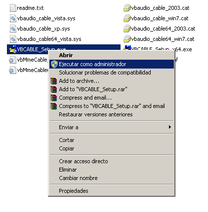

Bienvenidos a la documentación de WiMic!
Información General.¶
Con la aplicación de WiMic puedes usar varios teléfonos o equipos móviles al mismo tiempo como micrófono inalámbrico remoto (en conjunto con el Servidor WiMic) en video conferencias grupales, puedes usarlo también como micrófono remoto para megáfono ó usarlo para integrarlo (vía código fuente) con dispositivos IoT como el Raspberry Pi, Arduinos ó similares.
La aplicación WiMic Android (cliente) y el Servidor WiMic se distribuyen libremente y no tienen ni un costo, la donación es opcional. El uso del Servidor WiMic en ambientes comerciales y gubernamentales está permitido previa notificación por escrito de su uso al autor del proyecto, enviando un email a htakey@gmail.com con la referencia: “Uso del Servidor WiMic en ambiente comercial ó gubernamental”.
Motivación.¶
El sistema WiMic se desarrolló y se creó como respuesta temprana al impacto social que causó la pandemia “COVID-19” a principios del 2020. El sistema está enfocado para facilitar y mejorar la experiencia de interacción con la comunicación virtualizada en el área de la pedagogía escolar y la docencia en la educación superior con los alumnos y estudiantes.
Gracias a la flexibilidad y acceso al código fuente publicado del Servidor WiMic y la aplicación WiMic Android (cliente), es posible utilizarlo en otras áreas.
Instalación y puesta en marcha del sistema.¶
La aplicación WiMic Android funciona con el Servidor WiMic sincronizadamente, solo debes especificar la dirección ip del servidor y conectarte, es fácil y sencillo.
Por el momento el servidor está disponible para los sistemas operativos Windows y distribuciones Linux.
El uso que se le puede dar al sistema WiMic son numerosas, en ésta documentación explicaremos dos modos o maneras básicas de poder usarlo, uno es usándolo como un simple megáfono remoto grupal y la otra es usándolo como “micrófono virtual” para una video conferencia de clases virtuales, así poder explicar estando alejado de la PC, necesitaremos un driver de un tercero para habilitarlo, la prueba lo realizaremos con Jitsi, la configuración funciona para cualquier otra aplicaciones que use el micrófono y los altavoces de la PC, ya que el Servidor WiMic se comunica a nivel de hardware.
[Windows - Android]¶
A) Descarga e instala el driver de “Virtual Audio Cable” desde éste link:
o puedes descargarlo directamente con éste link:
Descomprime el archivo y extrae el contenido en cualquier carpeta de tu preferencia, puedes usar aplicaciones como el 7zip , el Peazip que se distribuyen libremente, ó WinRar.
Dentro de la carpeta ubicas el archivo VBCABLE_Setup_x64.exe y VBCABLE_Setup.exe, la diferencia de estos dos instaladores, es que una es de 64 bits y la otra es de 32 bits, si no sabes que version de Windows tienes, prueba primero con la de 64 bits y luego con la de 32 bits. Para instalarlo debes ejecutarlo con usuario administrador, de lo contrario el driver no se instalará, para ello haz click derecho sobre el instalador y luego click en “Ejecutar como Administrador”, aceptas las advertencias de administración y redes, luego en la ventana principal del instalador, click en el botón “install driver”.
Una vez instalado el driver, éste aparecerá en la lista de dispositivos de salida de audio en WiMic.
B) Descarga el servidor WiMic desde éste botón:

Nota: Si deseas verificar el checksum del archivo comprimido, éste se encuentra publicado en la sección Release del repositorio de WiMic server & client https://github.com/hiro2233/wimic/releases
C) Descomprime el archivo y extrae el contenido en cualquier carpeta de tu preferencia. Luego de descomprimir tendrás 3 archivos, wimic.exe, msys-2.0.dll y wimic.conf.

D.1) Servidor WiMic: Ejecuta wimic.exe y luego:
1) selecciona “CABLE Input (VB-Audio Virtual…”
2) click en el botón “select” y en la etiqueta “Device selected:” se mostrará el nombre seleccionado de la lista.
3) click en el botón “start” y esperas unos 3 a 5 segundos aproximadamente hasta que el led rojo de la etiqueta “Server:” cambie a color verde.

4) el led rojo de la etiqueta “Server:” cambia a color verde.
5) tomas nota de la dirección IP que se muestra en la etiqueta “IP: x.x.x.x”, ésta dirección puede variar según la configuración que tengas en tu red, en nuestro caso nos muestra la dirección 192.168.1.16, ésta dirección IP es la que vas a necesitar para poder conectar la aplicación con el servidor.

D.2) Aplicación WiMic Android (cliente): Abre la aplicación y luego:
6) Toca la cruz para agregar y configurar un nuevo servidor.

7) Escribes la dirección IP del servidor.
8) Toca añadir para completar y guardar la configuración.

9) Toca la caja para conectarte.
10) Toca “PERMITIR” para completar la conexión.
Nota: Cuando intentes conectarte a un nuevo servidor te aparecerá éste aviso una sola vez luego de aceptarla. Este certificado es generado por el servidor automáticamente en cada instalación nueva que realices y la almacena en la carpeta SSL donde se ejecutó el servidor, no aceptes certificados si no estás seguro de su procedencia. Toma en cuenta que si borras la carpeta SSL y ejecutas nuevamente el servidor, éste automáticamente creará un nuevo certificado y volverás a ver el aviso cuando intentes conectarte.

Cuando la aplicación se conecta con el servidor verás la siguiente pantalla, y ya puedes empezar a hablar para transmitir voz a la aplicación de video conferencia o cualquier otra que estés usando. En esta documentación usaremos Jitsi para poder probarlo.
Para usar el sistema ingresamos al sistema de video conferencias de Jitsi versión web, al momento de ingresar a una sala te solicitará el navegador que selecciones un micrófono, simplemente seleccionas el micrófono “CABLE Output (VB-Audio Virtual Audio)” y con esto ya podrás transmitir tu voz desde tu dispositivo móvil. Ahora prueba conectarte con otro dispositivo movil al mismo servidor y apreciarás mejor el potencial del sistema WiMic, puedes conectar hasta 10 dispositivos y hablar simultáneamente.

{kind=link}
{kind=link}
[Usando WiMic como megáfono remoto]¶
Para usar el sistema como un megáfono remoto, simplemente detienes haciendo click en el botón “stop” o puedes salirte y reiniciar el servidor haciendo click en el botón “close”, luego en la lista de dispositivos, seleccionas la salida de audio nativo de tu PC y a disfrutar!
Política de Uso y Garantías.¶
El Servidor WiMic y la aplicación WiMic Android (cliente) están desarrollados y publicados bajo licencias Open Source y Software Libre, como la Licencia General Pública (GPLv3) principalmente.
Estos programas se distribuyen con la esperanza de que sean útiles, y SIN NINGUNA GARANTÍA. Vea la Licencia Pública General de GNU para más detalles, https://www.gnu.org/licenses